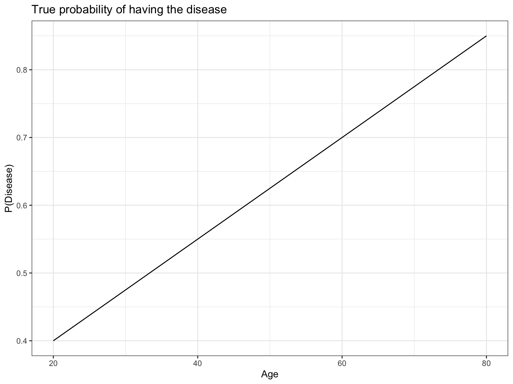

Motivation
In this document, we will show how calculating an odds ratio based on a dichotomized continuous predictor variable can be manipulated by changing the range of the predictor variable that was sampled (i.e, study inclusion criteria), whereas a logistic regression model that uses the continuous values of the predictor will produce a stable estimate.
Scenario
Assume that we are interested in a disease where the incidence varies with age.
We will assume as the true model a simple relationship where the probability of developing the disease is a linear function of age. The below plot shows this relationship.
Code
# True model of disease probability is a linear function of age
p_disease <- function(age){
0.25 + 0.0075*age
}
# Plot true model
tibble(age = seq(20, 80, length.out=2), prob = p_disease(age)) %>%
ggplot() +
aes(x=age, y=prob) +
geom_line() +
labs(title = "True probability of having the disease",
x="Age",
y="P(Disease)") +
theme_bw()
We decide to sample subjects from the population and record if they have the disease. For simplicity, assume we sample patients uniformly within a given age range. We will show that dichotomizing age at a cutpoint is not a good idea, and can lead to estimates that can be greatly affected by the chosen age range to be sampled.
To dichotomize the predictor variable, let’s compare the incidence of disease among old (age > 50) and young (age < 50) patients and calculate an odds ratio, instead of using age as a continuous variable. The below simulation shows the results of two scenarios. As a comparison, we also fit a logistic regression using continuous age.
First, we sample 10,000 subjects with ages between 40 and 60. Second, we sample 10,000 subjects with ages between 20 and 80. We show that the choices of inclusion criteria has a large effect on the odds ratio comparing odds of disease between young and old subjects, but the estimates provided by logistic regression are unchanged.
Simulation
Sample from ages 40 to 60
Code
# Draw 10,000 patients uniformly between 40 and 60
ages <- runif(10000, min=40, max=60)
# Calculate true probabilities for each patient
probs <- p_disease(ages)
# Generate data where each patient has `probs` probability of having the disease
data <- map_dbl(probs, ~sample(c(0,1), size=1, prob=c(1-.x, .x)))Code
# A tibble: 6 × 4
age prob disease old
<dbl> <dbl> <dbl> <lgl>
1 45.8 0.593 1 FALSE
2 55.8 0.668 1 TRUE
3 48.2 0.611 0 FALSE
4 57.7 0.682 1 TRUE
5 58.8 0.691 1 TRUE
6 40.9 0.557 1 FALSECode
table(df$disease, df$old)
FALSE TRUE
0 2081 1614
1 2976 3329Code
odds_ratio <- (3329 / 1614) / (2976 / 2081)
odds_ratio[1] 1.442279Code
Call: glm(formula = disease ~ age, family = binomial(), data = df)
Coefficients:
(Intercept) age
-1.23211 0.03547
Degrees of Freedom: 9999 Total (i.e. Null); 9998 Residual
Null Deviance: 13170
Residual Deviance: 13080 AIC: 13080Sample from ages 20 to 80
Code
FALSE TRUE
0 2400 1179
1 2625 3796Code
odds_ratio <- (3796 / 1179) / (2625 / 2400)
odds_ratio[1] 2.943705Conclusion
We see that when sampling from ages 40 to 60, the dichotomization approach estimated an odds ratio of 1.44 compared to an odds ratio of 2.94 when sampling from ages 20 to 80.
In contrast, when sampling from ages 40 to 60, the logistic regression estimated a regression coefficient for age of 0.0355 compared to a very similar value of 0.0359 when sampling from ages 20 to 80.